<!DOCTYPE html>
<html lang="ml">
<head>
  <meta charset="utf-8">
  <meta name="viewport" content="width=device-width, initial-scale=1.0">
  <title>Chapter 3 (Pages 47-66) - Class 9 Biology</title>
  <style>

:root {
  --bg-color: #fcfcfd;
  --card-bg: #ffffff;
  --text-color: #1e293b;
  --text-muted: #64748b;
  --primary-color: #0284c7;
  --primary-light: #e0f2fe;
  --border-color: #e2e8f0;
  --radius: 10px;
  --shadow: 0 4px 6px -1px rgb(0 0 0 / 0.05), 0 2px 4px -2px rgb(0 0 0 / 0.05);
}

body {
  font-family: -apple-system, BlinkMacSystemFont, "Segoe UI", Roboto, "Noto Sans Malayalam", "Manjari", "Gayathri", sans-serif;
  background-color: var(--bg-color);
  color: var(--text-color);
  line-height: 1.8;
  font-size: 1.1rem;
  margin: 0;
  padding: 0;
}

.container {
  max-width: 860px;
  margin: 0 auto;
  padding: 2.5rem 1.5rem 5rem 1.5rem;
}

header {
  margin-bottom: 2.5rem;
  padding-bottom: 1.5rem;
  border-bottom: 2px solid var(--border-color);
}

.badge-row {
  display: flex;
  gap: 0.5rem;
  margin-bottom: 0.75rem;
  flex-wrap: wrap;
}

.badge {
  display: inline-block;
  font-size: 0.75rem;
  font-weight: 700;
  text-transform: uppercase;
  letter-spacing: 0.05em;
  padding: 0.25rem 0.65rem;
  border-radius: 9999px;
  background: var(--primary-light);
  color: var(--primary-color);
}

.badge-medium {
  background: #fef3c7;
  color: #b45309;
}

.badge-class {
  background: #dcfce7;
  color: #15803d;
}

h1 {
  font-size: 2.1rem;
  font-weight: 800;
  margin: 0.5rem 0 1rem 0;
  line-height: 1.3;
  color: #0f172a;
}

.nav-bar {
  display: flex;
  justify-content: space-between;
  margin: 1.5rem 0;
  font-size: 0.95rem;
  flex-wrap: wrap;
  gap: 0.5rem;
}

.nav-bar a {
  color: var(--primary-color);
  text-decoration: none;
  font-weight: 600;
  padding: 0.5rem 1rem;
  border-radius: var(--radius);
  background: var(--card-bg);
  border: 1px solid var(--border-color);
  transition: all 0.2s ease;
}

.nav-bar a:hover {
  background: var(--primary-light);
  border-color: var(--primary-color);
}

.nav-bar .disabled {
  color: var(--text-muted);
  pointer-events: none;
  border-color: transparent;
  background: transparent;
}

.page-section {
  background: var(--card-bg);
  border: 1px solid var(--border-color);
  border-radius: var(--radius);
  box-shadow: var(--shadow);
  padding: 2rem;
  margin-bottom: 2.5rem;
}

.page-header {
  display: flex;
  align-items: center;
  justify-content: space-between;
  margin-bottom: 1.25rem;
  padding-bottom: 0.5rem;
  border-bottom: 1px dashed var(--border-color);
}

.page-number {
  font-size: 0.8rem;
  font-weight: 700;
  text-transform: uppercase;
  color: var(--text-muted);
  letter-spacing: 0.05em;
}

.page-content p {
  margin: 0 0 1.25rem 0;
  white-space: pre-wrap;
  word-break: break-word;
}

.page-content p:last-child {
  margin-bottom: 0;
}

.diagram-card {
  margin: 2rem 0;
  text-align: center;
  background: #f8fafc;
  border: 1px solid var(--border-color);
  border-radius: var(--radius);
  padding: 1rem;
  overflow: hidden;
}

.diagram-card img {
  max-width: 100%;
  height: auto;
  border-radius: calc(var(--radius) - 4px);
  display: inline-block;
  box-shadow: 0 2px 4px rgba(0,0,0,0.04);
}

.diagram-card figcaption {
  font-size: 0.85rem;
  color: var(--text-muted);
  margin-top: 0.75rem;
  font-weight: 500;
}

footer {
  margin-top: 3rem;
  padding-top: 2rem;
  border-top: 2px solid var(--border-color);
}

  </style>
</head>
<body>
  <div class="container">
    <header>
      <div class="badge-row">
        <span class="badge badge-class">Class 9</span>
        <span class="badge badge-medium">Malayalam Medium</span>
        <span class="badge">Biology</span>
        <span class="badge">Part 1</span>
      </div>
      <h1>Chapter 3 (Pages 47-66)</h1>
      <div class="nav-bar"><a href="part_1_chapter_02.html">← Chapter 2 (Pages 27-46)</a><a href="index.html">☰ Index</a><a href="part_1_chapter_04.html">Chapter 4 (Pages 67-80) →</a></div>
    </header>
    <main>
      <section class="page-section" id="page-47">
  <div class="page-header"><span class="page-number">Page 47</span></div>
  <figure class="diagram-card" id="fig_ch03_p047_01">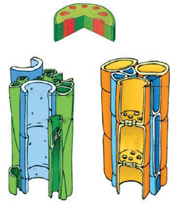<figcaption>Figure fig_ch03_p047_01 (Page 47)</figcaption></figure>
  <figure class="diagram-card" id="fig_ch03_p047_02"><figcaption>Figure fig_ch03_p047_02 (Page 47)</figcaption></figure>
  <figure class="diagram-card" id="fig_ch03_p047_03"><figcaption>Figure fig_ch03_p047_03 (Page 47)</figcaption></figure>
  <div class="page-content">
    <p>zœ“”šȻc IX</p>
    <p>f—šŽĹ›¡ź„—†c¢ˆš•sv}sā‘¡}–c“—†cmų›“
Œ†Ǡ›šÚ›¢ƼšmƼšzœ“zšāÇڝcf“”DZŒšf—šŽc
†›Åƣ›Úų ––DZā‘›Æ mā¡†š§ ˆ„šÅƒ–c“—†c
†}ڝų‚§#
“Äƽäā‘›}Úc ¢“Žs‘›ž¡} fu›Žc¡xƭų z“c
“ā‘cgs‘›¡Ĺų‚cgs‘›Æ†›Åƣ›Úųf—šŽc
––DZā‘¡}ŒǮ‹šuā‘›¢Ú§mś¢ăŽų‚cmā¡†š§#
xÅă¡xƪ§x“¡}†Æs››ĞǫˆĞ›s2.5ˆžÅśšÚž</p>
    <p>–c“—†s</p>
    <p>–c“—†c¡xƮ¡ƀ}ų
ˆ„šÅƒāÇ</p>
    <p>(Vascular tissues)</p>
    <p>zc“āÇ</p>
    <p></p>
    <p></p>
    <p>¢ƌšc (Phloem)</p>
    <p>ˆĞ›s––DZā‘›¡–c“—†c
x›ŅœsŽc 2.16  “›”s†c ¡xƪ§ £–Ĺ›¡źc
¢ƌšĹ›¡źc v}† ˆ„šÅƒ–c“—†Ĺ›†§ mŅ¢Ĺš‘c
e†¢šzDZŒš¡ų§s¡Ĭśs›ƀ§‚ƭššÚž</p>
    <p>¢ƌšc (Phloem)</p>
    <p>£–c (Xylem)
ğڜ§ (tracheid)</p>
    <p>–œ“§†š‘› (sieve tube)</p>
    <p>Ɯ‚¢sš”āÇgs‘¡}
¡x|ŽƠsÇ
Žžˆ¡ƀ}Ĺų†œ‘Œǫ
ǜ›Ä›Æ(spindle)
fՂ›ǫ“</p>
    <p>pų›†Œs‘›Æpųš›
e}Ú›“㛎›Úų
s¡sǫ‹›Ĺ››¡
–•›Žā‘›ž¡}¢sš”ŝ“DZc
ŠŰ¡ƀĞ›Ž›Úų‚›†šÆ
f—šŽ‚ŶšŅsÇÚ§
–ĕŽ›ÚšÄs’›ų</p>
    <p>¡“–Æ (vessel)
Ɯ‚¢sš”āÇ
s¡sǫ‹›Ĺ›sÇ
†”›ă¢ˆš‚›†šÆ
†œĬ£ˆƀsÇ¢ˆš¡
sš¡ƀ}ų</p>
    <p>–—¢sš”c
(companion cell)
–œ“§†š‘›¢š¡}šƀc ¢xÅų§
f—šŽ–c“—†Ĺ›†§
–—š›Úų</p>
    <p>x›ŅœsŽc 2.16––DZā‘›¡–c“—†ssÇ
47</p>
  </div>
</section><section class="page-section" id="page-48">
  <div class="page-header"><span class="page-number">Page 48</span></div>
  <figure class="diagram-card" id="fig_ch03_p048_01">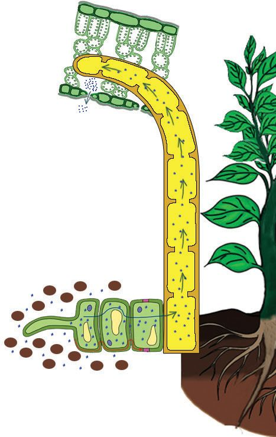<figcaption>Figure fig_ch03_p048_01 (Page 48)</figcaption></figure>
  <figure class="diagram-card" id="fig_ch03_p048_02"><figcaption>Figure fig_ch03_p048_02 (Page 48)</figcaption></figure>
  <figure class="diagram-card" id="fig_ch03_p048_03"><figcaption>Figure fig_ch03_p048_03 (Page 48)</figcaption></figure>
  <figure class="diagram-card" id="fig_ch03_p048_04"><figcaption>Figure fig_ch03_p048_04 (Page 48)</figcaption></figure>
  <figure class="diagram-card" id="fig_ch03_p048_05"><figcaption>Figure fig_ch03_p048_05 (Page 48)</figcaption></figure>
  <figure class="diagram-card" id="fig_ch03_p048_06"><figcaption>Figure fig_ch03_p048_06 (Page 48)</figcaption></figure>
  <div class="page-content">
    <p>zœ“”šȻc IX</p>
    <p>£–c ‰§¢‘šc mų›“¡} v}† Œ†–›šÚ›¢Ƽš
g“›ž¡}ˆ„šÅƒ–c“—†c†}ڝų‚§mā¡†š§#
x›ŅœsŽc 2.17 –žxsā‘¡} e}›Ǚš†Ĺ›Æ “›”s†c
¡xƪ§†›uŒ†āÇ¢Žt¡ƀ}Ĺž</p>
    <p>z–c“—†c
£–cs’s‘›Æ†›ų§
p–§¢Œš–›–›ž¡}gs‘›¡
¢sš”ā‘›¡Ĺųzc––DZ¢–Ǵ„†c
“’›ˆ¢ĹÚ§</p>
    <p>––DZ¢–Ǵ„†Ĺ›ž¡}gs‘›Æ†›ų§zc
†Ǐ¡ƀ}ų‚§ £–cs’s‘›ž¡}ǫ
zĹ›¡źiÅăƩ§sšŽŒšsųz‚ŶšŅ
s‘¡}¡sš—›•Äe§—›•ÄŠāÇh
Ƃ⛍¡–—š›Úų</p>
    <p>q–§¢Œš–›–§Œžczc
¢“Ž›¡ ¢sš”ā‘›¢Ú§
Ƃ¢“”›Úų£–c
s’›¡ĹųzĹ›¡ź
iÅăƩ§žĞ§Ƃ•ÅpŽ
ˆŽ› ›“¡Ž–—š›Úų</p>
    <p>48</p>
  </div>
</section><section class="page-section" id="page-49">
  <div class="page-header"><span class="page-number">Page 49</span></div>
  <figure class="diagram-card" id="fig_ch03_p049_01">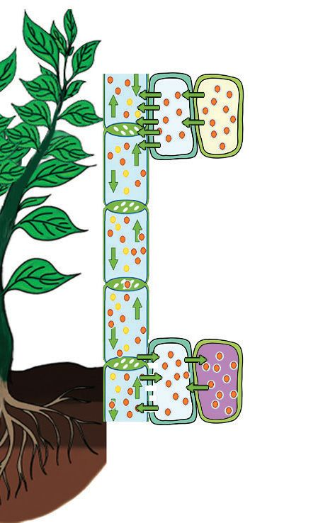<figcaption>Figure fig_ch03_p049_01 (Page 49)</figcaption></figure>
  <figure class="diagram-card" id="fig_ch03_p049_02"><figcaption>Figure fig_ch03_p049_02 (Page 49)</figcaption></figure>
  <figure class="diagram-card" id="fig_ch03_p049_03"><figcaption>Figure fig_ch03_p049_03 (Page 49)</figcaption></figure>
  <figure class="diagram-card" id="fig_ch03_p049_04"><figcaption>Figure fig_ch03_p049_04 (Page 49)</figcaption></figure>
  <figure class="diagram-card" id="fig_ch03_p049_05"><figcaption>Figure fig_ch03_p049_05 (Page 49)</figcaption></figure>
  <figure class="diagram-card" id="fig_ch03_p049_06"><figcaption>Figure fig_ch03_p049_06 (Page 49)</figcaption></figure>
  <figure class="diagram-card" id="fig_ch03_p049_07"><figcaption>Figure fig_ch03_p049_07 (Page 49)</figcaption></figure>
  <div class="page-content">
    <p>zœ“”šȻc IX</p>
    <p>f—šŽ–c“—†c</p>
    <p>Ƃsš”–c¢Nj•Ĺ›¡ź
‰Œš›gs‘›Æ†›Åƣ›Ú¡ƀ}ų
øž¢Úš–›¡†–ž¢âš–›¡ź ŽžˆĹ›Æ
–œ“§†š‘›s‘›¢Ú§jÅzciˆ¢šu›ă§
s}ŝų</p>
    <p>–œ“§†š‘›s‘›¡–ž¢âš–›¡ź
iÅųuš€‚e}Ĺǫ£–c
s’s‘›Æ†›ų§zce“›¢}Ú§
Ƃ¢“”›Úų‚›†§sšŽŒšsų
‚ŶžŒĬšsųiÅų}ÅuÅƂ•Å
(Turgor pressure)–œ“§†š‘›s‘›ž¡}ǫ
–ž¢âš–›¡ź–c“—†c–š DZŒšÚų</p>
    <p>¢sš”ā‘›¢Úǫ
–ž¢âš–›¡ź Ƃ¢“”†c</p>
    <p>x›ŅœsŽc 2.17 ––DZā‘›¡–c“—†c</p>
    <p>49</p>
  </div>
</section><section class="page-section" id="page-50">
  <div class="page-header"><span class="page-number">Page 50</span></div>
  <figure class="diagram-card" id="fig_ch03_p050_01"><figcaption>Figure fig_ch03_p050_01 (Page 50)</figcaption></figure>
  <figure class="diagram-card" id="fig_ch03_p050_02"><figcaption>Figure fig_ch03_p050_02 (Page 50)</figcaption></figure>
  <div class="page-content">
    <p>zœ“”šȻc IX</p>
    <p>y z–c“—†Ĺ›†§–—š›ÚųƂ⛍sÇ
y ŒĴ›Æ†›ų§¢“Ž›¢ÚǫzĹ›¡źfu›Žc
y sšįśž¡}ǫzĹ›¡ź–c“—†c
y ––DZ¢–Ǵ„†“c(Transpiration)zĹ›¡ź–c“—†“c
y gs‘›¡¢sš”ā‘›Æ†›ų§––DZā‘›¡
ŒǮ‹šu¢Ĺڝǫˆ„šÅƒ–c“—†c</p>
    <p>e‚›Žš“›¡x›––DZā‘¡}gs‘¡}
eŽ›ss‘›Æ‚ā›†›Æڝųzs›ssÇ
†›ā‘¡}NJŗ›Æ¡ƀЛЛ¢ƼmŦš›‚›†§
sšŽc#e¢†Ǵ•›Úž</p>
    <p>¢ƂšĞœÄ eųzc ¡sš’ƀ§ mų›ā¡† “DZ‚DZǘŽžˆā‘›Æ
––DZāÇ –c‹Ž›Úų f—šŽc ˆŽ¢ˆš•›s‘š zœ“›sÇ
f—Ž›Ús“’› zœ“¢šsś¡ź †›†›Æƀ§ –š DZŒšsų
gā¡†‹›Úų¢ˆš•sā¡‘vv}sā‘šÚųƂ⛍c
“›“›  ¢ˆš•sā‘›Æ †›ųc Žžˆ¡ƀ}ų v‚ŶšŅs‘c
e“¡}fu›Ž“c–c“—†“cŒ†Ǡ›šÚ›¢Ƽšg‚›†§
–—š›Úų„—†“DZ“ǙŽÞˆŽDZ†“DZ“Ǚmų›“¡}
f¢ŽšuDZ–cŽäĹ›†§ i‚sų zœ“›‚Žœ‚› ˆ›Ŧ}¢ŽĬ‚§
†ƣ¡}s}Œš§
¢sš”Ĺ›Ĭšsų“›“› v}sā‘cŠš—DZˆŽ›–ŽĹ†›ų§
¢sš”Ĺ›¡Ĺųv}sā‘c†›ŽŦŽŒšŽš–Ƃ“ÅņāÇÚ§
“›¢ Œšsų‚›¡ź ‰Œšš§ zœ“ÆƂ“ÅņāÇ
†}ڝų‚§jÅ¢zšÆˆš„†ceŎś¡šŽƂ“ÅņŒš§
gā¡†ǫ zœ“Æ Ƃ“Åņā‘¡} ‰Œš› šŽš‘c
“›–ÅzDZ“ǘÚ‘c iĬšsųĬ§ g“ ƒš–Œc †œÚc
¡xƭ¡ƀ}ų‚§ zœ“ÆƂ“Åņā‘¡} –Ŧ›‚š“ǙƩ§
e‚DZš“”DZŒš§ e¡‚ā¡† –š DZŒšsų¡“ų§ e}Ĺ
e DZšĹ›ÆˆŽ›¢”š ›Úǰ</p>
    <p>50</p>
  </div>
</section><section class="page-section" id="page-51">
  <div class="page-header"><span class="page-number">Page 51</span></div>
  <figure class="diagram-card" id="fig_ch03_p051_01"><figcaption>Figure fig_ch03_p051_01 (Page 51)</figcaption></figure>
  <figure class="diagram-card" id="fig_ch03_p051_02">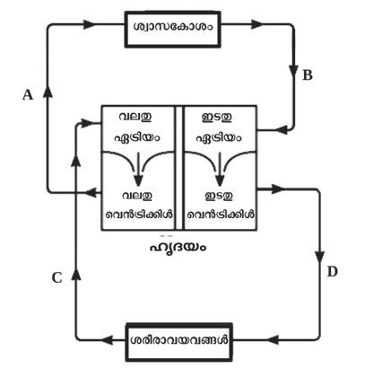<figcaption>Figure fig_ch03_p051_02 (Page 51)</figcaption></figure>
  <div class="page-content">
    <p>zœ“”šȻc IX</p>
    <p>“››ŽĹšc
1.</p>
    <p>2.</p>
    <p>‚š¡’sšų“›Æ†›ų§ ¡sš’ƀ›¡ź„—†“Œš›
ŠŰ¡ƀĞ‚§s¡Ĭŝs
(a) ¢ƂšĞ›¢–§</p>
    <p>(b) ›¢ˆ–§</p>
    <p>(c) eŒ›¢–§</p>
    <p>(d) sšÅ¢Šš£—¢Ħ–§</p>
    <p>Œ†•DZŽ›¡ ŽÞˆŽDZ†“DZ“Ǚsš›Úųx›ŅœsŽc
x“¡}†ƴ››Ž›Úųe‚§“›”s†c¡xƪ§x“¡}ǫ
¢xš„DZāÇÚ§iŎcs¡Ĭŝs</p>
    <p>(a)”Ǵš–¢sš” Œ†›¡–žx›ƀ›ÚųeäŽcn‚§#
(b) DmųeäŽcn‚§ ŽÞڝ’›¡†š§–žx›ƀ›Ú</p>
    <p>ų‚§#
(c) ¡“Äğ›Ú›‘s‘›¢Ú§</p>
    <p>Ƃ¢“”›ă ŽÞc ‚›Ž›¡s
nğ›ā‘›¢Ú§ Ƃ¢“”›Ú¢Œš#mŦ¡sšĬ§#</p>
    <p>(d) Œ†•DZ†›Æ„Ǵ›ˆŽDZ†Ĺ›¡ź Ƃš š†DZ¡ŒŦ§#
3.  ¢ˆš•sv}sā‘¡}–ĕšŽˆš‚sš›Úų‰§¢‘šxšÅЧ</p>
    <p>x“¡} †ƴ››Ž›Úų g‚§ †›Žœä›ă§ ¢xš„DZāÇÚ§
iŎ¡Œ’‚s</p>
    <p>%</p>
    <p>¡xs}Æ</p>
    <p>sŽÇ</p>
    <p>&amp;</p>
    <p>&#x27;</p>
    <p>Ǣ„c</p>
    <p>(a) A, B, Cmų›ā¡†–žx›ƀ›ă›Ž›ÚųŽÞڝ’s‘¡}</p>
    <p>¢ˆ¡Ž’‚s
(b) ¡xs}›Æ†›ų§  fu›Žc ¡xƭ¡ƀ}ų mƼš
¢ˆš•sv}sāÇڝcg¢‚–ĕšŽˆš‚š¢šiǫ‚§#
“›”„ŒšÚs
51</p>
  </div>
</section><section class="page-section" id="page-52">
  <div class="page-header"><span class="page-number">Page 52</span></div>
  <figure class="diagram-card" id="fig_ch03_p052_01"><figcaption>Figure fig_ch03_p052_01 (Page 52)</figcaption></figure>
  <figure class="diagram-card" id="fig_ch03_p052_02">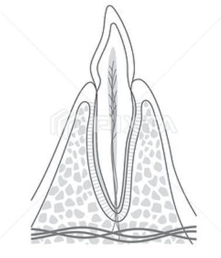<figcaption>Figure fig_ch03_p052_02 (Page 52)</figcaption></figure>
  <div class="page-content">
    <p>zœ“”šȻc IX
4.</p>
    <p>‚š¡’ƀų“›ÆjÅzciˆ¢šu›ă§†}ڝų
Ƃ“Åņ¢Œ‚§#
(a) ¢“Ž›¡ ¢sš”ā‘›¢ÚǫzĹ›¡ź Ƃ¢“”†c
(b) –œ“§†š‘›s‘›¢Úǫ–ž¢âš–›¡ź Ƃ¢“”†c
(c) ––DZ¢–Ǵ„†Ĺ›ž¡}gs‘›Æ†›ųǫzc</p>
    <p>†Ǐ¡ƀ}Æ
(d) £–cs’s‘›ž¡}ǫz‚ŶšŅs‘¡}
–c“—†c
5. x“¡}†ƴ››Ğǫx›Ņc“Žă§ –žx†sÇچ–Ž›ăǫ
‹šuāÇ¢ˆ¡Ž’‚›e}š‘¡ƀ}Ĺs</p>
    <p>(a) pš¢źšƗšǡ§ ¢sš”āÇsš¡ƀ}ų‹šuc
(b) ˆƼ›¡† ¢Œš›Æiƀ›ă§†›Åŝųs
(c) ˆƼ§†›Åƣ›ă›Ž›Úųzœ“†ǫs</p>
    <p>‚}ÅƂ“ÅņāÇ
(1) ̈́njœā‘cǢ„š¢ŽšuDZ“cÎmų“›•Ĺ›Æ</p>
    <p>¢Šš “Æڎ㚖§ –cv}›ƀ›Ús
(2) ‚¢Ŕ”œŒš› ‹DZŒšsų ‹äDZ“ǘÚÇ iˆ¢šu›ă§</p>
    <p>ǗžÇ¡—Æŧ ãƔ›¡źf‹›ŒtDZśÆ¢ˆš•sš—šŽ¢Œ‘
–cv}›ƀ›Ús</p>
    <p>52</p>
  </div>
</section><section class="page-section" id="page-53">
  <div class="page-header"><span class="page-number">Page 53</span></div>
  <figure class="diagram-card" id="fig_ch03_p053_01">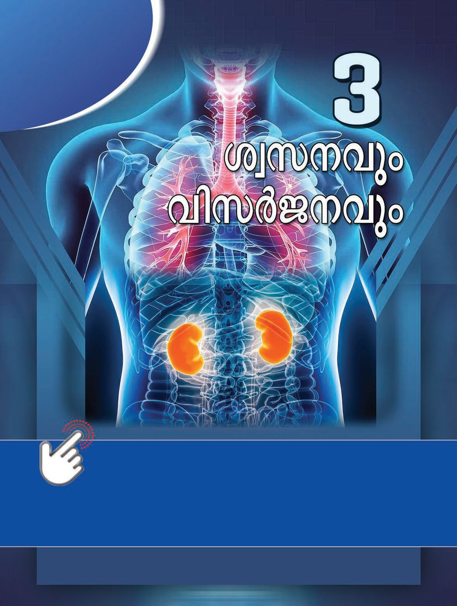<figcaption>Figure fig_ch03_p053_01 (Page 53)</figcaption></figure>
  <div class="page-content">
    <p>zœ“”šȻc IX</p>
    <p>y Œ†•Dz¡ź”ǵ–†“Dz“ǚ
y “š‚s“›†›Œc
y ¢sš””ǵ–†c
y ”ǵ–†cŒǯ§zœ“›s‘›Æ
y ž›†›Åƣšc
53</p>
    <p>y ŒžŅŽžˆœsŽc
y ––Dzā‘›¡“›–Åz†c
y —œ¢Œšš›–›–§
y ƾڌšǯ›“ƩÆ
y –Œǚ›‚›ˆš†c</p>
  </div>
</section><section class="page-section" id="page-54">
  <div class="page-header"><span class="page-number">Page 54</span></div>
  <figure class="diagram-card" id="fig_ch03_p054_01">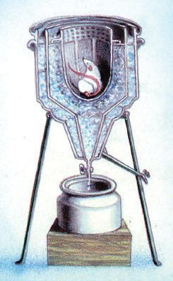<figcaption>Figure fig_ch03_p054_01 (Page 54)</figcaption></figure>
  <figure class="diagram-card" id="fig_ch03_p054_02"><figcaption>Figure fig_ch03_p054_02 (Page 54)</figcaption></figure>
  <figure class="diagram-card" id="fig_ch03_p054_03"><figcaption>Figure fig_ch03_p054_03 (Page 54)</figcaption></figure>
  <div class="page-content">
    <p>zœ“”šȻc IX</p>
    <p>mŦš§”ǵ–†c#
zœ“›s‘›¡ ”Ǵ–†Ƃ⛍¡ ‘›‚Œš› “›”„œsŽ›Ú
ų‚›Ƴ “›z›ă ”šȻ膚§ ˆ‚›¡†Ğšc †žǮšĬ›
¡ f¡źš›ť š¢“š–›ư (1743-1794) “ǘÚǪ
sŝ¢Ơš’c zœ“›sÇ ”Ǵ–›Ú¢Ơš’c †}ڝų‚§ p¢Ž
Ƃ⛍š§ mų§ e¢Ŕ—c e†Œš†›ă g‚§ ¡‚‘››Úš
†š› pŽ ¡x› ŠÚǮ›Ƴ u›†›ƀų›¡ “㝠g‚›¡†
o–§ †›ă Œ¡ǮšŽ ŠÚǮ›Ƴ gÚ›“㧠u›†›ƀų›
¡ “¡sšĬ§ Œž}› ˆ¡Œ †›ųǫ xž}¡sšĬ§ o–§
iŽsš‚›Ž›Úšťf“”DZŒšgť–¢•ťŒťsŽ‚cm}
śŽųmųšƳo–§iŽs›u›†›ƀų›¡}”ŽœŽĹ›¡
xž¢}Ǯ‚¡sšĬš›ā¡† –c‹“›ă¡‚ų§ š¢“š–›ư
¡‚‘››ăzœ“›¡}”ŽœŽĹ›Ƴ†›ų§80s›¢šs¢š›
jÅzc g‚›†š› iˆ¢šu›ă mų§ e¢Ŕ—c sÚ
sžĞ›¡}ĹhjÅzc‹›ă‚§”Ǵ–†Ĺ›ž¡}š§pŽ
‚}›Ú•c sŝ¢ƠšǪ qs§–›zť iˆ¢šu›Úsc
sšưŠÃ £qs§£–c ‚š¢ˆšưz“c iĬš“sc
¡xƭų”Ǵ–†Ĺ›Ƴqs§–›zťøž¢Úš–›¡†“›v}›ƀ›
ڝ¢Ơš’cg‚§–c‹“›Úų</p>
    <p>ˆ‚›¡†Ğšc†žǮšĬ›Æf¡źš›ťš¢“š–›Å†}śŽ–sŽŒšpŽˆŽœäĹ›
¡ź“›“Žc“š›ă“¢Ƽš”Ǵ–†¡ĹƀǮ›ǫ†›ā‘¡} šŽ–žxsā‘¡}e}›
Ǚš†Ĺ›Æ“›”s†c¡xƪ§¡Œă¡ƀ}Ĺž
Ñ”Ǵ–†Ĺ›czǴ†Ĺ›cqs§–›z¡źˆÿ§
Ñ”Ǵ–†Ĺ›¡źczǴ†Ĺ›¡źciƈųāÇ
”Ǵ–†Ƃ⛍›Æ qs§–›zÄ iˆ¢šu›Úų¡“ųc sšÅŠÃ £qs§£–§
Žžˆ¡ƀ}ų¡“ųc Œ†Ǡ›šÚ›¢Ƽš g“¡} “›†›ŒĹ›†§ e†¢šzDZŒš pŽ
”Ǵ–†Ƃ‚“ce†ŠŰ–c“› š†ā‘cf“”DZŒš§
Œ†•DZ†›Æ jÅ¢zšÆˆš„†Ĺ›†§ f“”DZŒšŅc qs§–›zť ¢sš”āǪÚ§ ‹›Ú
¡Œÿ›Ƴ“‘¡Ž“›”Ǵ–†Ƃ‚cf“”DZŒš§Œ†•DZ†›¡”Ǵ–†Ƃ‚cn‚š§#
g‚§mƂsšŽŒš§†ƣ¡}”ŽœŽĹ›Ƴ⌜sŽ›ă›Ž›Úų‚§#
”Ǵ–†“DZ“Ǚ¡}x›ŅœsŽc3.1ˆžưśšÚ›“›“Žc“›”s†c¡xƪ§Œ†•DZ
†›¡”Ǵ–†Ƃ‚¡ĹƀǮ›s›ƀ§‚ƭššÚž
54</p>
  </div>
</section><section class="page-section" id="page-55">
  <div class="page-header"><span class="page-number">Page 55</span></div>
  <figure class="diagram-card" id="fig_ch03_p055_01">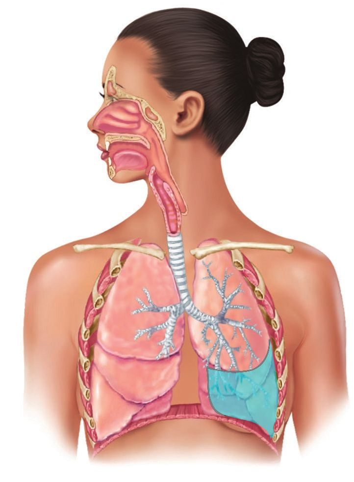<figcaption>Figure fig_ch03_p055_01 (Page 55)</figcaption></figure>
  <figure class="diagram-card" id="fig_ch03_p055_02"><figcaption>Figure fig_ch03_p055_02 (Page 55)</figcaption></figure>
  <figure class="diagram-card" id="fig_ch03_p055_03"><figcaption>Figure fig_ch03_p055_03 (Page 55)</figcaption></figure>
  <figure class="diagram-card" id="fig_ch03_p055_04"><figcaption>Figure fig_ch03_p055_04 (Page 55)</figcaption></figure>
  <figure class="diagram-card" id="fig_ch03_p055_05"><figcaption>Figure fig_ch03_p055_05 (Page 55)</figcaption></figure>
  <figure class="diagram-card" id="fig_ch03_p055_06"><figcaption>Figure fig_ch03_p055_06 (Page 55)</figcaption></figure>
  <figure class="diagram-card" id="fig_ch03_p055_07"><figcaption>Figure fig_ch03_p055_07 (Page 55)</figcaption></figure>
  <figure class="diagram-card" id="fig_ch03_p055_08"><figcaption>Figure fig_ch03_p055_08 (Page 55)</figcaption></figure>
  <figure class="diagram-card" id="fig_ch03_p055_09">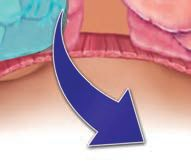<figcaption>Figure fig_ch03_p055_09 (Page 55)</figcaption></figure>
  <figure class="diagram-card" id="fig_ch03_p055_10">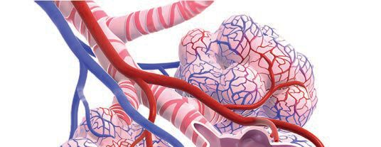<figcaption>Figure fig_ch03_p055_10 (Page 55)</figcaption></figure>
  <figure class="diagram-card" id="fig_ch03_p055_11">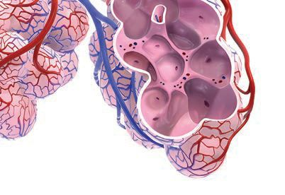<figcaption>Figure fig_ch03_p055_11 (Page 55)</figcaption></figure>
  <figure class="diagram-card" id="fig_ch03_p055_12">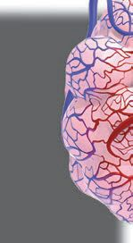<figcaption>Figure fig_ch03_p055_12 (Page 55)</figcaption></figure>
  <figure class="diagram-card" id="fig_ch03_p055_13">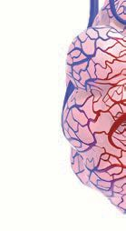<figcaption>Figure fig_ch03_p055_13 (Page 55)</figcaption></figure>
  <figure class="diagram-card" id="fig_ch03_p055_14"><figcaption>Figure fig_ch03_p055_14 (Page 55)</figcaption></figure>
  <div class="page-content">
    <p>zœ“”šȻc IX</p>
    <p>”Ǵš–¢sš”āÇ</p>
    <p>”ǵ–†›s(Bronchiole)</p>
    <p>”Ǵ–†›¡} ”št
fƓ›¢š–s‘›¢Ú§
‚Úų</p>
    <p>ƃž (Pleura)
”Ǵš–¢sš”¡Ĺ
¡ˆš‚›ĚǫǘŽc</p>
    <p>Ƌc (Diaphragm)
i„Žš”¡ĹcrŽ–š”
¡Ĺc ¢“Å‚›Ž›Úų
¢ˆ”œ†›Åƣ›‚‹›Ĺ›</p>
    <p>fƓ›¢š–§(Alveolus)
”Ǵ–†›ss‘¡}e÷‹šuŝsš¡ƀ}ųgšǘ›s
‚ǫe‚›¢šǘŽesÇg“¡}iˆŽ›‚
śÆ“ÚĴ›sÇ¢ˆš¡ šŽš‘cŽÞ¢šŒ›ssÇ
sš¡ƀ}ų ŽĬ”Ǵš–¢sš”ā‘›Œš› ns¢„”c
70 ¢sš}› fƓ›¢š–s‘Ĭ§ fƓ›¢š–s
‘¡}Ƃ‚“›ǘœÅĴcns¢„”c 70m2 f§g“”Ǵ–
†Ƃ‚Ĺ›¡ź “›ǘœÅĴc “Å ›ƀ›ă§ “š‚s“›†›Œc (Gas
exchange)sšŽDZ䌌šÚų
x›ŅœsŽc 3.1Œ†•DZ¡ź”Ǵ–†“DZ“Ǚ
55</p>
  </div>
</section><section class="page-section" id="page-56">
  <div class="page-header"><span class="page-number">Page 56</span></div>
  <figure class="diagram-card" id="fig_ch03_p056_01"><figcaption>Figure fig_ch03_p056_01 (Page 56)</figcaption></figure>
  <div class="page-content">
    <p>zœ“”šȻc IX</p>
    <p>”Ǵ–†“DZ“Ǚ¡} ‹šuāÇ Œ–Ǡ›šÚ›¢Ƽš# eŦŽœä“š†š–šŽŲśž¡}
1RဧULO Ƃ¢“”›ă§fƓ›¢š–›Æmŝų‚“¡Žǫˆš‚‰§¢‘šxšÅĞš›x›Ņœ
sŽ›Ú
†›āÇ sš›s“›¢†š„ā‘›c “DZššŒĹ›c nÅ¡ƀ}š›¢Ƽ# gŎc –ŭŋā‘›Æ
¡“ź›¢•Ä ”Ǵš¢–šĄǴš–c  †›ŽÚ›Æ ŒšǮc “Žų¢Ĭš# x“¡} †Æs››Ž›Úų
Ƃ“Åņc¡xƪ¢†šÚž
i sĞ›sÇŽĬ¢ˆŽ}āų÷žƀs‘šss
i eĕŒ›†›Ǯ§“›NJŒ›Úsh–ŒcpŽŒ›†›Ǯ›†
ǫ›Æ †}ڝų iĄǴš–ā‘¡} mĴc gŽ“Žc
¢Žt¡ƀ}Ĺs
i ¢ǡšƀ§“šă§iˆ¢šu›ă§–Œc¢Žt¡ƀ}Ĺs
i p¢ŽšŒ›†›Ǯ§g}¢“‘›ÆŽĬ‚“sž}›
iĄǴš–ā‘¡}mĴc¢Žt¡ƀ}Ĺs
i ‚}Åų§gŽ“ŽcŒžųŒ›†›Ǯ§q}›¢”•c‚›Ž›ă
“ų§ŒƠ§–žx›ƀ›ăƂsšŽciĄǴš–ā‘¡}mĴc
¢Žt¡ƀ}Ĺs
i ‚}Åų§ ˆžÅ“Ǚ›‚››¡Ĺų‚“¡Ž q¢Žš
Œ›†›Ǯ›ciĄǴš–ā‘¡}mĴc¢Žt¡ƀ}Ĺs
i h‰āÇiÇ¡ƀ}Ĺ›x“¡}†Æs›ˆĞ›s
ˆžÅŜsŽ›ă¢”•cpŽ£Ä÷š‰§ “Žă§ gŽ“
Ž¡}c¡“ź›¢•Ä†›ŽÚ§‚šŽ‚ŒDZ¡ƀ}Ĺs</p>
    <p>–žx†
–ŒcŒ›†›Ǯ›Æ
sĞ›
sĞ›</p>
    <p>“›NJŒš“Ǚ›¡
iĄǴš–ā‘¡}mĴc</p>
    <p>“DZššŒĹ›†¢”•c
iĄǴš–ā‘¡}mĴc</p>
    <p>1</p>
    <p>9</p>
    <p>3</p>
    <p>5</p>
    <p>11</p>
    <p>13</p>
    <p>ˆĞ›s3.1¡“ź›¢•Ä†›ŽÚ§</p>
    <p>†›uŒ†c


sš›s“›¢†š„ā‘›c“DZššŒĹ›cnÅ¡ƀ}¢ƠšÇ¢ˆ”œƂ“Åņcsž}ų‚›
†šÆ sž}‚Æ jÅzc f“”DZŒš§ jÅzc sž}‚Æ ¢“Ĭ‚›†šÆ qs§–›z¡ź
f“”DZs‚ “Å ›Úų sž}š¡‚ ”ŽœŽĹ›Æ †›ų§ sž}‚Æ sšÅŠÃ £q
s§£–›¡†ˆŦ¢ǫĬ‚šc“Žųg‚›†šš§”Ǵ–†Ƃ⛍›¡f„DZv
ĞŒš”Ǵš¢–šĄǴš–Ĺ›¡ź†›ŽÚ§sž}›‚§
56</p>
  </div>
</section><section class="page-section" id="page-57">
  <div class="page-header"><span class="page-number">Page 57</span></div>
  <figure class="diagram-card" id="fig_ch03_p057_01"><figcaption>Figure fig_ch03_p057_01 (Page 57)</figcaption></figure>
  <figure class="diagram-card" id="fig_ch03_p057_02"><figcaption>Figure fig_ch03_p057_02 (Page 57)</figcaption></figure>
  <figure class="diagram-card" id="fig_ch03_p057_03">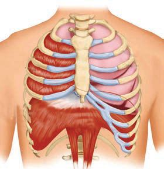<figcaption>Figure fig_ch03_p057_03 (Page 57)</figcaption></figure>
  <figure class="diagram-card" id="fig_ch03_p057_04"><figcaption>Figure fig_ch03_p057_04 (Page 57)</figcaption></figure>
  <figure class="diagram-card" id="fig_ch03_p057_05"><figcaption>Figure fig_ch03_p057_05 (Page 57)</figcaption></figure>
  <figure class="diagram-card" id="fig_ch03_p057_06">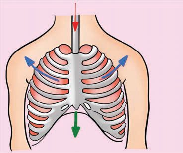<figcaption>Figure fig_ch03_p057_06 (Page 57)</figcaption></figure>
  <figure class="diagram-card" id="fig_ch03_p057_07">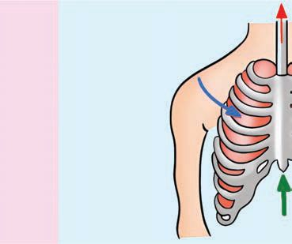<figcaption>Figure fig_ch03_p057_07 (Page 57)</figcaption></figure>
  <figure class="diagram-card" id="fig_ch03_p057_08">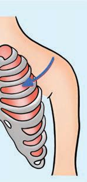<figcaption>Figure fig_ch03_p057_08 (Page 57)</figcaption></figure>
  <div class="page-content">
    <p>zœ“”šȻc IX</p>
    <p>¡“ź›¢•Ä (Ventilation)
eŦŽœäśÆ†›ų§ ”Ǵš–¢sš”Ĺ›¢Úc‚›Ž›ăŒǫ
“š“›¡ź–ĕšŽŒš§ ¡“ź›¢•Ä
¡“ź›¢•†›¡ vĞāÇ n¡‚
gźÅ¢sšǡÆ¢ˆ”›
ƼšŒš§#
“šŽ›¡Ƽ§
Ñ iĄǴš–c ,QVSLUDWLRQ eŦŽœ
䓚”Ǵš–¢sš”Ĺ›¢Ʃ§
Ƌc
s}ڝųƂ⛍
Ñ †›”Ǵš–c ([SLUDWLRQ 
</p>
    <p>x›Ņc 3.1</p>
    <p>g“mƂsšŽŒš§ †}ڝų‚§#
x›Ņc 3.1, x›ŅœsŽc3.2mų›““›”s†c ¡xƪ§ˆĞ›s3.2ˆžÅśšÚž
iĄǵš–c</p>
    <p>†›”ǵš–c</p>
    <p>“š</p>
    <p>“š
gźÅ¢sšǡÆ¢ˆ”›
–¢ÿšx›Úų ˆžÅ“Ǚ›‚›
Ƃšˆ›Úų</p>
    <p>“šŽ›¡Ƽ§
iŽų ‚š’ų</p>
    <p>Ƌc
–¢ÿšx›Úų ˆžÅ“Ǚ›‚›
Ƃšˆ›Úų</p>
    <p>x›ŅœsŽc 3.2 ¡“ź›¢•Ä</p>
    <p>–žxsāÇ</p>
    <p>iĄǵš–c</p>
    <p>†›”ǵš–c</p>
    <p>sž}ų</p>
    <p>sų</p>
    <p>gźÅ¢sšǡÆ¢ˆ”›s‘¡}Ƃ“Åņc
“šŽ›¡Ƽs‘¡}x†c
Ƌś†ĬšsųŒšǮc
rŽ–š”“DZšžc
”Ǵš–¢sš”Ĺ›¡ “šŒÅ„c
“š“›¡ź–ĕšŽc
ˆĞ›s3.2 ¡“ź›¢•Ä
57</p>
  </div>
</section><section class="page-section" id="page-58">
  <div class="page-header"><span class="page-number">Page 58</span></div>
  <figure class="diagram-card" id="fig_ch03_p058_01"><figcaption>Figure fig_ch03_p058_01 (Page 58)</figcaption></figure>
  <figure class="diagram-card" id="fig_ch03_p058_02"><figcaption>Figure fig_ch03_p058_02 (Page 58)</figcaption></figure>
  <figure class="diagram-card" id="fig_ch03_p058_03">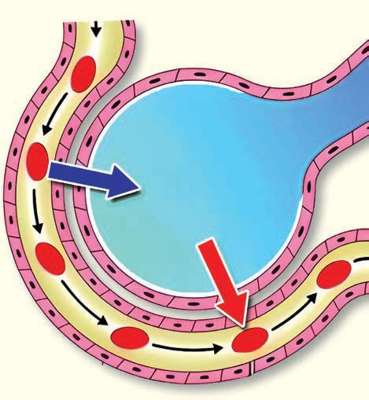<figcaption>Figure fig_ch03_p058_03 (Page 58)</figcaption></figure>
  <figure class="diagram-card" id="fig_ch03_p058_04"><figcaption>Figure fig_ch03_p058_04 (Page 58)</figcaption></figure>
  <figure class="diagram-card" id="fig_ch03_p058_05"><figcaption>Figure fig_ch03_p058_05 (Page 58)</figcaption></figure>
  <figure class="diagram-card" id="fig_ch03_p058_06"><figcaption>Figure fig_ch03_p058_06 (Page 58)</figcaption></figure>
  <div class="page-content">
    <p>zœ“”šȻc IX</p>
    <p>”Ǵ–†ˆâ››¡ f„DZvĞc Œ†Ǡ›šÚ›¢Ƽš fƓ›¢š–›¡Ĺ› “š“›Æ
†›ųcqs§–›z¡†ŽÞś¢ÚcŽÞśÆ†›ų§ sšÅŠÃ£qs§£–›¡†
fƓ›¢š–›¢Úc £sŒšų‚š§ ”Ǵ–†Ĺ›¡ź e}ĹvĞc g‚š§
fƓ›¢ššÅ“š‚s“›†›Œc</p>
    <p>fƓ›¢ššÅ“š‚s“›†›Œc(Alveolar gas exchange)
fƓ›¢š–s‘c e“¡ ¡ˆš‚›Ě›Ž›Úų ŽÞ¢šŒ›ss‘›¡ ŽÞ“Œšš§
“š‚s“›†›Œc †}ڝų‚§ h Ƃ⛍ mƂsšŽŒš§ †}ڝų‚§? x›ŅœsŽc 3.3
–žxsāÇچ–Ž›ă§ “›”s†c ¡xƭž xÅăs‘¡} e}›Ǚš†Ĺ›Æ †›uŒ†āÇ
ŽžˆœsŽ›ă§s›ƀ§‚ƭššÚ
hÅƀc</p>
    <p>CO
O2</p>
    <p>”Ǵ–†“š‚s
āǐ›Úų
›‰DZž•Äm‘ƀŒš
ڝų</p>
    <p>2</p>
    <p>O2</p>
    <p>CO2</p>
    <p>RBC</p>
    <p>fƓ›¢š–›¡ź
‹›Ĺ›</p>
    <p>O2</p>
    <p>CO2
CO2</p>
    <p>CO2 uš€‚</p>
    <p>O2</p>
    <p>CO2
O2</p>
    <p>O2</p>
    <p>pǮ†›Ž¢sš”ā‘šÆ†›Åƣ›‚c
ŽÞ¢šŒ›sš‹›Ĺ›</p>
    <p>O2</p>
    <p>O2</p>
    <p>sž}‚Æ</p>
    <p>O2 uš€‚s“§</p>
    <p>O2</p>
    <p>O2</p>
    <p>O2</p>
    <p>fƓ›¢ššÅ
ŽÞ¢šŒ›s</p>
    <p>x›ŅœsŽc 3.3 fƓ›¢ššÅ“š‚s“›†›Œc
fƓ›¢š–›¡źc ŽÞ¢šŒ›s¡}c
‹›Ĺ›¡}–“›¢”•‚
y fƓ›¢š–›¡ź ‹›Ĺ››¡ hÅƀś
¡ź Ƃš š†DZc
y fƓ›¢š–›¡c ŽÞ¢šŒ›s›¡c
O2, CO2uš€‚
y fƓ›¢š–c ŽÞ¢šŒ›sc ‚ƣ›ǫ
qs§–›zÄ sšÅŠÃ £qs§£–§
“›†›Œc
y</p>
    <p>58</p>
    <p>fƓ›¢š
–›¡ “š“c
fƓ›¢ššÅ
ŽÞ¢šŒ›s›¡
ŽÞ“c‚ƣ›ǫ
escpŽŒ›ƼœŒœǮ›
¡źf›ŽĹ›¡š
ų›Æ‚š¡’š§</p>
  </div>
</section><section class="page-section" id="page-59">
  <div class="page-header"><span class="page-number">Page 59</span></div>
  <figure class="diagram-card" id="fig_ch03_p059_01">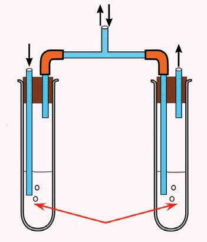<figcaption>Figure fig_ch03_p059_01 (Page 59)</figcaption></figure>
  <figure class="diagram-card" id="fig_ch03_p059_02">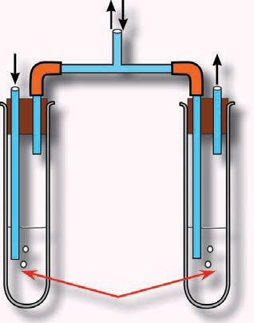<figcaption>Figure fig_ch03_p059_02 (Page 59)</figcaption></figure>
  <figure class="diagram-card" id="fig_ch03_p059_03">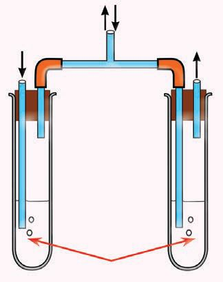<figcaption>Figure fig_ch03_p059_03 (Page 59)</figcaption></figure>
  <figure class="diagram-card" id="fig_ch03_p059_04">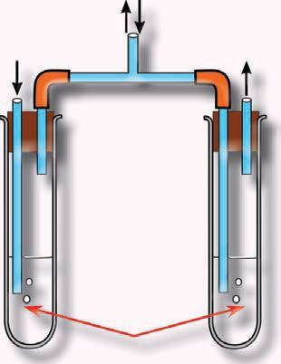<figcaption>Figure fig_ch03_p059_04 (Page 59)</figcaption></figure>
  <figure class="diagram-card" id="fig_ch03_p059_05">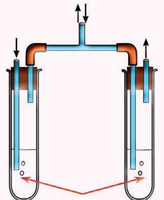<figcaption>Figure fig_ch03_p059_05 (Page 59)</figcaption></figure>
  <figure class="diagram-card" id="fig_ch03_p059_06">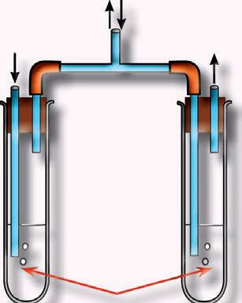<figcaption>Figure fig_ch03_p059_06 (Page 59)</figcaption></figure>
  <figure class="diagram-card" id="fig_ch03_p059_07"><figcaption>Figure fig_ch03_p059_07 (Page 59)</figcaption></figure>
  <figure class="diagram-card" id="fig_ch03_p059_08"><figcaption>Figure fig_ch03_p059_08 (Page 59)</figcaption></figure>
  <div class="page-content">
    <p>zœ“”šȻc IX</p>
    <p>–Å‰çź§
“š†›¢ƠšÇ–uŒŒš›“›s–›Úš†c “šp’›¢ƠšÇˆ‚¡Ú
xŽāš†cfƓ›¢š–s¡‘–—š›Úų‚§ e‚›†ǫ›¡–Å‰çź§ mų
ˆ„šÅƒā‘š§ g“¡} e‘“§ ‚œ¡Ž s“ššÆ ¡“ź›¢•Ä Šŗ›ŒĞš›Ž›
ڝc Œš–c‚›sš¡‚ z†›Úų ”›”Ú‘›š§ –š šŽš› h e“Ǚ
sĬ“Žų‚§eŎc †“zš‚”›”ÚÇŒŽ¡ƀ}š†Œ›}Ĭ§</p>
    <p>iĄǵš–“š“›¡c†›”ǵš–“š“›¡c
sšÅŠÃ£qs§£–›¡ź–šų› DzcŒ†–›šÚšc
A</p>
    <p>B</p>
    <p>xĴšƠ¡“ǫc
£—ĦzÄ
sšÅŠ¢Ǯ§
š†›</p>
    <p>C</p>
    <p>x›Ņc 3.2</p>
    <p>y x›Ņś¡¢ƀš¡iˆsŽāÇ–ċœsŽ›Ús
y A mų}DZžŠ›ž¡}ˆ‚¡Ú “š§iˆ¢šu›ă§ ”Ǵš¢–šĄǴš–c</p>
    <p>¡xƭs
y B, C mųœ¡}ǡ§}DZžŠs‘›¡gě¢ÚǮŐš†›¡}
†›cŒšǮc †›Žœä›Ús</p>
    <p>(–žx†gě¢Úǯš›xĴšƠ¡“Ǭciˆ¢šu›ăšÆsšÅŠÃ
£¢šs§£–§s}ų¢ˆšs¢ƠšÇxĴšƠ¡“Ǭś†§ˆšÆ†›c
s›Ğc £—ĦzÄ sšÅŠ¢ǯ§ gě¢ÚǯÅ š†› iˆ¢šu›Ús
š¡ÿ›Æe‚›¡ź†›cx“ƀ›Æ†›ų§ŒĚšsc</p>
    <p>†›Žœä“c †›uŒ†“c


fƓ›¢ššÅ “š‚s“›†›Œc Œ†Ǡ›šÚ›¢Ƽš ”Ǵ–†
Ƃ⛍›¡g‚ŽvĞāÇsž}›iÇ¡ƀ}Ĺ› †Æs››Ž›Úų
x›ŅœsŽc 3.4 –žxsā‘¡} e}›Ǚš†Ĺ›Æ “›”s†c
¡xƪ§ˆĞ›s 3.3ˆžÅśšÚs
59</p>
  </div>
</section><section class="page-section" id="page-60">
  <div class="page-header"><span class="page-number">Page 60</span></div>
  <figure class="diagram-card" id="fig_ch03_p060_01"><figcaption>Figure fig_ch03_p060_01 (Page 60)</figcaption></figure>
  <figure class="diagram-card" id="fig_ch03_p060_02"><figcaption>Figure fig_ch03_p060_02 (Page 60)</figcaption></figure>
  <figure class="diagram-card" id="fig_ch03_p060_03"><figcaption>Figure fig_ch03_p060_03 (Page 60)</figcaption></figure>
  <figure class="diagram-card" id="fig_ch03_p060_04"><figcaption>Figure fig_ch03_p060_04 (Page 60)</figcaption></figure>
  <figure class="diagram-card" id="fig_ch03_p060_05">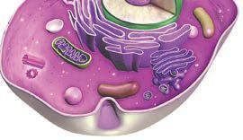<figcaption>Figure fig_ch03_p060_05 (Page 60)</figcaption></figure>
  <figure class="diagram-card" id="fig_ch03_p060_06"><figcaption>Figure fig_ch03_p060_06 (Page 60)</figcaption></figure>
  <figure class="diagram-card" id="fig_ch03_p060_07"><figcaption>Figure fig_ch03_p060_07 (Page 60)</figcaption></figure>
  <figure class="diagram-card" id="fig_ch03_p060_08">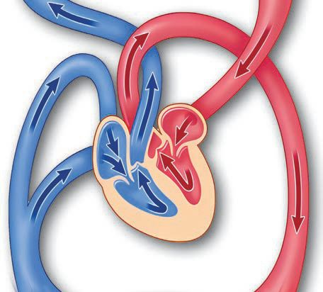<figcaption>Figure fig_ch03_p060_08 (Page 60)</figcaption></figure>
  <figure class="diagram-card" id="fig_ch03_p060_09">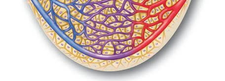<figcaption>Figure fig_ch03_p060_09 (Page 60)</figcaption></figure>
  <figure class="diagram-card" id="fig_ch03_p060_10">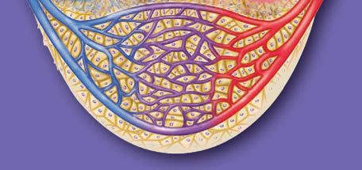<figcaption>Figure fig_ch03_p060_10 (Page 60)</figcaption></figure>
  <figure class="diagram-card" id="fig_ch03_p060_11">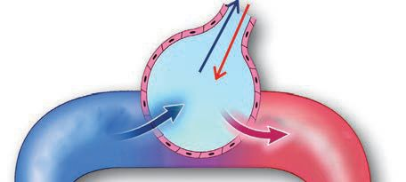<figcaption>Figure fig_ch03_p060_11 (Page 60)</figcaption></figure>
  <div class="page-content">
    <p>zœ“”šȻc IX</p>
    <p>fƓ›¢ššÅ“š‚s“›†›Œc
CO2 ¡źuš€‚ƃš–§Œ›Æ</p>
    <p>sž}‚š‚›†šÆfƓ›
¢š–›¢Ú§ CO2 ›‰DZž•
†›ž¡} “DZšˆ›Úų</p>
    <p>CO2 O
2
CO2</p>
    <p>O2</p>
    <p>fƓ›¢š–›ÆO2
¡źuš€‚sž}‚š
‚›†šÆfƓ›¢ššÅ
ŽÞ¢šŒ›s›¡
ŽÞś¢Ú§ O2 ›‰DZž
•†›ž¡} “DZšˆ›Úų</p>
    <p>“š‚s–c“—†c
fƓ›¢ššÅŽÞ¢šŒ›ss
‘›Æ“ă§sšÅŠŒ›¢†š—œ¢Œš
¢øšŠ›†c £ŠsšÅŠ¢Ǯc
“›v}›ă§ CO2 ƃš–§Œ›¡
ŝų
7% CO2ƃš–§Œ›Æ›Ú
ų23% —œ¢Œš¢øšŠ›†Œš›</p>
    <p>¢sš”Ĺ›†}Ĺ
“ă§qs§–›—œ¢Œš
¢øšŠ›Ä“›v}›ă§
qs§–›zÄ–Ǵ‚ũ
Œšsų</p>
    <p>¢ăÅų§sšÅŠŒ›¢†š—œ¢Œš¢øš
Š›†šsų70% RBC ›¡
z“Œš›–c¢šz›ă§ £Š
sšÅŠ¢Ǯšsų
CO2</p>
    <p>O2
ŽÞśÆ†›ųc
qs§–›zÄ}›•DZžŝ“
ś¢Úce“›¡}
†›ų§ ¢sš”ā‘›¢
ڝcƂ¢“”›Úų</p>
    <p>2</p>
    <p>O</p>
    <p>2</p>
    <p>CO</p>
    <p>–›ǢŒ›s§“š‚s“›†›Œc
¢sš”ā‘›Æ†›ų§ CO2 }›•DZžŝ
“Ĺ›¢Úce“›¡}†›ų§
ŽÞś¢ÚcƂ¢“”›Úų</p>
    <p>”Ǵš–¢sš”Ĺ›Æ
“㧠¡x›¡šŽ
‹šuc O2ƃš–§Œ
›Æ›Úų
ŠšÚ› O2—œ¢Œš
¢øšŠ›†Œš›¢ăÅ
ų§qs§–›—œ¢Œš
¢øšŠ›†šsų</p>
    <p>¢sš””ǵ–†c
£ø¢Úš‘›–›–§</p>
    <p>¢sš””Ǵ–†Ĺ›¡ź f„DZvĞc ¢sš”ŝ“DZśÆ
†}ڝųqs§–›zÄf“”DZŒ›Ƽøž¢Úš–›¡†
£ˆž“›s§f–›šÚ›ŒšǮų2 ATP‚ŶšŅ
sǐ‹DZŒšsų</p>
    <p>¢sš”Ĺ›Æ“ă§
øž¢Úš–›¡†
qs§–›zÄiˆ¢š
u›ă§ “›v}›ƀ›ă§
jÅzc –Ǵ‚ũŒš
ڝųƂ⛍</p>
    <p>¡âŠ§–§£–Ú›Ç</p>
    <p>¢sš””Ǵ–†Ĺ›¡źŽĬšcvĞc£Œ¢Ǯš¢sšÃ
Ħ››Æ †}ڝų qs§–›zÄ f“”DZŒš§
£ˆž“›s§ f–›§ sšÅŠÃ £qs§£–
c z“Œš›Œšų28 ATP‚ŶšŅsǐ‹DZ
Œšsų
x›ŅœsŽc 3.4 ”Ǵ–†Ƃ⛍
60</p>
  </div>
</section><section class="page-section" id="page-61">
  <div class="page-header"><span class="page-number">Page 61</span></div>
  <figure class="diagram-card" id="fig_ch03_p061_01"><figcaption>Figure fig_ch03_p061_01 (Page 61)</figcaption></figure>
  <figure class="diagram-card" id="fig_ch03_p061_02"><figcaption>Figure fig_ch03_p061_02 (Page 61)</figcaption></figure>
  <figure class="diagram-card" id="fig_ch03_p061_03"><figcaption>Figure fig_ch03_p061_03 (Page 61)</figcaption></figure>
  <div class="page-content">
    <p>zœ“”šȻc IX</p>
    <p>i qs§–›zÄ–c“—†c
i ŽÞśÆ†›ųcss‘›¢Úǫqs§–›zÄƂ¢“”†c
i ¢sš””Ǵ–†c
i ss‘›Æ†›ųcŽÞś¢ÚǫsšÅŠÃ£qs§£–§Ƃ¢“”†c
i sšÅŠÃ£qs§£–§ –c“—†c
i sšÅŠÃ£qs§£–§ ˆc‚ǫÆ
i ”Ǵ–†Ƃ⛍›¡vĞāÇ</p>
    <p>–žxsc</p>
    <p>£ø¢Úš‘›–›–§</p>
    <p>¡âŠ§–§£–Ú›Ç</p>
    <p>†}ڝų‹šuc
Žš–Ƃ“ÅņśÆˆ¡ÿ}Úų
ˆ„šÅƒāÇ
iƈųāÇ
qs§–›z¡źf“”DZs‚
ˆĞ›s 3.3 ¢sš””Ǵ–†c
¢sš””Ǵ–†‰ŒšĬšsųATP ‚ŶšŅs‘š§ ”šŽœŽ›sƂ“ÅņāÇښ“”DZŒš
jÅz¢Ǟš‚–§i¢ˆšÆˆųŒšsšÅŠÃ£qs§£–cpŽˆŽ› ›“¡Ž z“c
i}Ă¡ų †›”Ǵš–“š“›ž¡}ˆc‚ǫųgƂsšŽc”Ǵ–†“š‚sā‘¡}–c“—
†“c ¢sš”ā‘›Æ “㧠øž¢Úš–›¡† qs§–›zÄ iˆ¢šu›ă§ “›v}›ƀ›ă§ jÅzc
–Ǵ‚ũŒšÚųƂ⛍c ¢xŽų‚š§”Ǵ–†c
¢sš””Ǵ–†Ĺ›†§f“”DZŒšˆ„šÅƒā‘ciƈųā‘ciÇ¡ƀ}Ĺ›hŽš–Ƃ“Å
ņś¡ “›Ğ‹šucˆžŽ›ƀ›Úž</p>
    <p>øž¢Úš–§ +.................</p>
    <p>mÄ£–ŒsÇ</p>
    <p>................ +................+ 30 ATP</p>
    <p>zœ“¢šsŧ †}ڝų ¡ŒǮš¡Šš‘›s§ Ƃ“Åņā‘š¢Ƽš Ƃsš”–c¢Nj•“c
”Ǵ–†“c g“ ‚šŽ‚ŒDZc ¡xƪ§ ˆĞ›s 3.3 ¡ź ŒšĶs›Æ £ø¢Úš‘›–›–§ ¡âŠ§–§
£–Ú›Çmų›“Ʃ§ˆsŽcƒšâŒcƂsš”–c¢Nj•c”Ǵ–†cmų§ŒšǮ›ˆĞ›s†›Å
ƣ›Ús
—šÄ–§ e¢šÇ‰§ ¡âŠ§–§ (1900-1981)mųzÅƣÄ
Š¢š¡sŒ›ǡš§¢sš””Ǵ–†Ĺ›¡ŽĬšcvĞś¡
Žš–Ƃ“ÅņāÇ s¡Ĭś‚§ e‚›†šš§ h
vĞc ¡âŠ§–§ £–Ú›Çmų›¡ƀ}ų‚§hs¡Ĭ
՛†§ 1953 - ¡ £“„DZ”šȻś†ǫ ¡†š¢ŠÆ
–ƣš†cƋ›Ǯ§–§›ˆ§Œš¢†š¡}šƀce¢Ŕ—cˆÿ“ă
61</p>
  </div>
</section><section class="page-section" id="page-62">
  <div class="page-header"><span class="page-number">Page 62</span></div>
  <figure class="diagram-card" id="fig_ch03_p062_01">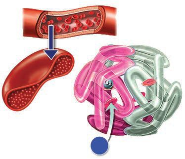<figcaption>Figure fig_ch03_p062_01 (Page 62)</figcaption></figure>
  <figure class="diagram-card" id="fig_ch03_p062_02"><figcaption>Figure fig_ch03_p062_02 (Page 62)</figcaption></figure>
  <figure class="diagram-card" id="fig_ch03_p062_03">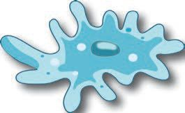<figcaption>Figure fig_ch03_p062_03 (Page 62)</figcaption></figure>
  <figure class="diagram-card" id="fig_ch03_p062_04"><figcaption>Figure fig_ch03_p062_04 (Page 62)</figcaption></figure>
  <figure class="diagram-card" id="fig_ch03_p062_05">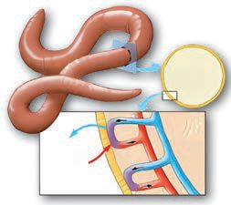<figcaption>Figure fig_ch03_p062_05 (Page 62)</figcaption></figure>
  <figure class="diagram-card" id="fig_ch03_p062_06"><figcaption>Figure fig_ch03_p062_06 (Page 62)</figcaption></figure>
  <figure class="diagram-card" id="fig_ch03_p062_07">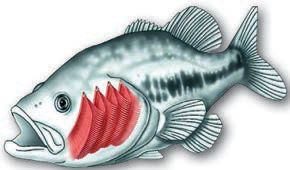<figcaption>Figure fig_ch03_p062_07 (Page 62)</figcaption></figure>
  <figure class="diagram-card" id="fig_ch03_p062_08"><figcaption>Figure fig_ch03_p062_08 (Page 62)</figcaption></figure>
  <figure class="diagram-card" id="fig_ch03_p062_09"><figcaption>Figure fig_ch03_p062_09 (Page 62)</figcaption></figure>
  <figure class="diagram-card" id="fig_ch03_p062_10"><figcaption>Figure fig_ch03_p062_10 (Page 62)</figcaption></figure>
  <figure class="diagram-card" id="fig_ch03_p062_11"><figcaption>Figure fig_ch03_p062_11 (Page 62)</figcaption></figure>
  <div class="page-content">
    <p>zœ“”šȻc IX</p>
    <p>—œ¢Œš¢øšŠ›Ä
•</p>
    <p>RBC ›¡“ÅĴsc</p>
    <p>Ñ
Ñ</p>
    <p>gŽƠ§ŒtDZv}sŒš¢ƂšĞœÄ
q¢Žš RBC ›c 270 „”äc —œ¢Œš¢øš
Š›Ä‚ŶšŅsÇ
pŽ—œ¢Œš¢øšŠ›Ä‚ÄŒšŅ †š§qs§–›zÄ
‚ŶšŅs¢‘¢š†š§sšÅŠÃ£qs§£–
§‚ŶšŅs¢‘¢š–c“—†c¡xƭų
—œ¢Œš¢øšŠ›¡źe‘“§ Ȼœs‘›Æ 12-16 gm/dL
ŽÞcˆŽ•ŶšŽ›Æ14-18 gm/dL ŽÞc
e‘“sų‚§e†œŒ›Ʃ§sšŽŒšsų</p>
    <p>Ñ</p>
    <p>Ñ</p>
    <p>RBC
qs§–›zÄ</p>
    <p>Ñ
—œ¢Œš¢øšŠ›Ä</p>
    <p>Š›¡ź
—œ¢Œš¢øš śÆ
e‘“§ŽÞ ›†ǫ
sų‚ āÇ
–š—xŽDZ ?
m¡ŦƼǰ Žc
‚
n¡‚š¡Ú iĬ§?
Ç
e†œŒ›s ž
s¡ĬĹ</p>
    <p>x›ŅœsŽc3.5 —œ¢Œš¢øšŠ›Ä
e†œŒ› Ƃ‚›¢Žš ›ÚšÄ e†“Åśښ“ų f¢ŽšuDZ”œ
āÇm¡ŦƼšŒš§#xÅă¡xƭž
Œ†•DZ†›¡ ”Ǵ–†¡ĹƀǮ›Œ†Ǡ›šÚ›¢Ƽš
ŒǮ§zŦÚ‘›c––DZā‘›c†}ڝų”Ǵ–†Ƃ⛍mƂsš
ŽŒš›Ž›Úc#xÅă¡xƭž</p>
    <p>”ǵ–†cŒǯ§ zœ“›s‘›Æ
”Ǵ–†Ĺ›†§ qs§–›zÄiˆ¢šu›Úųzœ“›s‘›¡ ¢sš””Ǵ–†Ƃ⛍Œ†•DZŽ›¢
‚›†§ –Œš†Œš§ mųšÆ “š‚s“›†›Œc –c“—†c mų›“›Æ “DZ‚DZš–ŒĬ§
“DZ‚DZǘzœ“›s‘›Æ”Ǵ–†Ƃ‚ā‘c“DZ‚DZš–¡ƀĞ›Ž›Úųx›ŅœsŽc 3.6†›Žœä›
ăc “›“Ž¢”tŽc †}śc “›“›  ”Ǵ–†Ƃ‚āÇ “š‚s“›†›Œc mų›“
–cŠŰ›ă§xÅă¡xƪ§†›ā‘¡}s¡ĬĹÆe“‚Ž›ƀ›Úž</p>
    <p>eŒœŠ</p>
    <p>ŒĴ›Ž</p>
    <p>O2 CO2</p>
    <p>¢sš”ǘŽc</p>
    <p>CO2
O2</p>
    <p>ŒŇDzc</p>
    <p>O2 CO2</p>
    <p>‚ǴÚ§(Skin)
x›ŅœsŽc3.6 ”Ǵ–†cŒǮ§zœ“›s‘›Æ
62</p>
    <p>”sc(Gill)</p>
  </div>
</section><section class="page-section" id="page-63">
  <div class="page-header"><span class="page-number">Page 63</span></div>
  <figure class="diagram-card" id="fig_ch03_p063_01">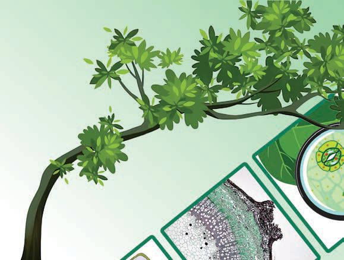<figcaption>Figure fig_ch03_p063_01 (Page 63)</figcaption></figure>
  <figure class="diagram-card" id="fig_ch03_p063_02"><figcaption>Figure fig_ch03_p063_02 (Page 63)</figcaption></figure>
  <figure class="diagram-card" id="fig_ch03_p063_03">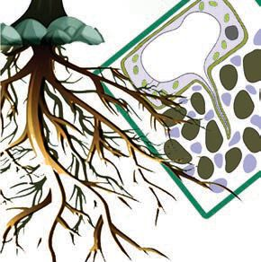<figcaption>Figure fig_ch03_p063_03 (Page 63)</figcaption></figure>
  <figure class="diagram-card" id="fig_ch03_p063_04">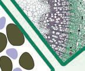<figcaption>Figure fig_ch03_p063_04 (Page 63)</figcaption></figure>
  <figure class="diagram-card" id="fig_ch03_p063_05"><figcaption>Figure fig_ch03_p063_05 (Page 63)</figcaption></figure>
  <figure class="diagram-card" id="fig_ch03_p063_06">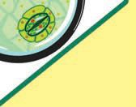<figcaption>Figure fig_ch03_p063_06 (Page 63)</figcaption></figure>
  <figure class="diagram-card" id="fig_ch03_p063_07"><figcaption>Figure fig_ch03_p063_07 (Page 63)</figcaption></figure>
  <div class="page-content">
    <p>zœ“”šȻc IX</p>
    <p>––DZā‘›¡ ¢sš””Ǵ–†Ƃ⛍ Œ†•DZ†›¢‚›†§ –Œš†Œš
¡ų§ Œ†Ǡ›šÚ›¢Ƽš mųšÆ g“Ʃ§ ”Ǵ–†“DZ“Ǚ¢š
“š‚s–c“—†Ĺ›†š› Ƃ¢‚DZs e““ā¢‘š gƼ mųšÆ
gsšįc¢“Ž§mų›“›}ā‘›Æ“š‚s“›†›ŒĹ›†§Ƃ¢‚DZs
–c“› š†ā‘Ĭ§ x›ŅœsŽc 3.7, “›“Žc mų›“ “›”s†c
¡xƪ§––DZā‘›¡”Ǵ–†¡Ĺڝ›ă§s›ƀ§‚ƭššÚž</p>
    <p>CO2
O2</p>
    <p>O2</p>
    <p>CO2</p>
    <p>g›cg‘csšįā‘›c
iǫ¡x–•›Žā‘š
–§¡Ǯš¢ŒǮ</p>
    <p>sĞ›sž}›sšįś¡źc ¢“Ž›¢źc
iˆŽ›‚Ĺ›ǫ¡x–•›Žā‘š
¡ź›¡–ƼsÇ
O2
CO2</p>
    <p>ŒÃ‚Ž›sÇڛ}›ǫ“š“Œš›“š‚s“›†›Œc
†}ŝų¢“Ž›¡ ¢sš”āÇ</p>
    <p>x›ŅœsŽc 3.7––DZā‘›¡ “š‚s“›†›Œc
–§¡Ǯš¢ŒǮˆsƖŒā‘›Æ‚ų›Ž›ÚscŽšŅ››Æe}
sc ¡xƭųgs‘›¡Œœ¢–š‰›Æ¢sš”ā‘›ÆˆsÆ
–ŒĹ§ p¢Ž–Œc Ƃsš”–c¢Nj•“c ”Ǵ–†“c †}ڝ
ųˆsƖŒĹ§ Ƃsš”–c¢Nj•Ĺ›¡ź ¢‚š‚§ sž}‚š
‚›†šÆ iĬšsų qs§–›z¡† ”Ǵ–†Ĺ›†š› iˆ¢šu›
ڝsc e ›sŒǫ qs§–›z¡† ˆŦǫsc ¡xƭų
”Ǵ–†‰ŒšĬšsų CO2Ƃsš”–c¢Nj•Ĺ›†§ iˆ¢š
u›Úų ‚›sšĹ‚§ eŦŽœäśÆ †›ųc –ǴœsŽ›Úų
ŽšŅ›sšā‘›Æ –§¡Ǯš¢ŒǮ e}¢ƠšÇ ›‰DZž•†›ž¡}
”Ǵ–†“š‚sā‘¡} “›†›Œc †}ڝų
63</p>
  </div>
</section><section class="page-section" id="page-64">
  <div class="page-header"><span class="page-number">Page 64</span></div>
  <figure class="diagram-card" id="fig_ch03_p064_01"><figcaption>Figure fig_ch03_p064_01 (Page 64)</figcaption></figure>
  <figure class="diagram-card" id="fig_ch03_p064_02"><figcaption>Figure fig_ch03_p064_02 (Page 64)</figcaption></figure>
  <figure class="diagram-card" id="fig_ch03_p064_03"><figcaption>Figure fig_ch03_p064_03 (Page 64)</figcaption></figure>
  <figure class="diagram-card" id="fig_ch03_p064_04"><figcaption>Figure fig_ch03_p064_04 (Page 64)</figcaption></figure>
  <figure class="diagram-card" id="fig_ch03_p064_05"><figcaption>Figure fig_ch03_p064_05 (Page 64)</figcaption></figure>
  <figure class="diagram-card" id="fig_ch03_p064_06"><figcaption>Figure fig_ch03_p064_06 (Page 64)</figcaption></figure>
  <figure class="diagram-card" id="fig_ch03_p064_07"><figcaption>Figure fig_ch03_p064_07 (Page 64)</figcaption></figure>
  <div class="page-content">
    <p>zœ“”šȻc IX</p>
    <p>x›ŅœsŽc 3.8 †›Žœä›ă§š¢ÜšŠš–›–§ŠšÜœŽ›œǡ§
mų›“›¡ ¢sš””Ǵ–†¡ĹŒƠ§ˆŽšŒÅ”›ă zœ“›s‘›¢‚
Œš› ‚šŽ‚ŒDZc ¡xƪ§ –žxsāÇچ–Ž›ă§ xÅă¡xƪ§
†›uŒ†cŽžˆœsŽ›Úž</p>
    <p>š¢ÜšŠš–›–§
ŠšÜœŽ›</p>
    <p>œǡ§</p>
    <p>øž¢Úš–§</p>
    <p>øž¢Úš–§
2ATP</p>
    <p>2ATP</p>
    <p>¢sš”ŝ“Dzc</p>
    <p>£ˆž“›s§
f–›§</p>
    <p>£ˆž“›s§
f–›§
fÆÚ¢—šÇ
CO2</p>
    <p>šÜ›s§f–›§</p>
    <p>x›ŅœsŽc 3.8 e¡†§¢šŠ›s§”Ǵ–†c
y qs§–›z¡źf“”DZs‚
y ”Ǵ–†vĞā‘›¡–Œš†‚c “DZ‚DZš–“c
y ATPs‘¡}mĴc
y ŠšÜœŽ› œǡ§ mų›“›¡ ¢sš””Ǵ–†Ƃ⛍›¡
“DZ‚DZš–c 



</p>
    <p>
Œ†•DZ†›Æ ›s§
šŠ
e¡†§¢ }ڝ
”Ǵ–†c † #
ų¢Ĭš

s¡ĬŞ</p>
    <p>Œ†•DZ†}ڌǫ zŦÚ‘›c ––DZā‘›c ”Ǵ–†c †}ڝ
ų‚§qs§–›zÄiˆ¢šu›ăš§gŎc”Ǵ–†¡Ĺ m§¢š
Š›s§ ”ǵ–†c ($HURELF UHVSLUDWLRQ) mų “›‘›Úų mųšÆ
x› ŠšÜœŽ›sÇ œǡ§ mų›“›Æ ”Ǵ–†c †}ڝų‚§
qs§–›zÄiˆ¢šu›Úš¡‚š§gŎc”Ǵ–†¡Ĺ e¡†
§¢šŠ›s§”ǵ–†c ($QDHURELFUHVSLUDWLRQ) mų “›‘›Úų
†›‚DZzœ“›‚Ĺ›¡ x› –š—xŽDZāÇ †Æs››Ž›Úų
g“›Æe¡†§¢šŠ›s§”Ǵ–†cmƂsšŽcƂ¢šz†¡ƀ}ų
mų§xÅă¡xƪ§s›ƀ§‚ƭššÚž
y Œš“§ ˆ‘›ƀ›ÚšÄœǡ§ ¢xÅڝų
y £‚ŽĬšÚšÄˆš›Æ£‚Ž§ ¢xÅڝų
64</p>
  </div>
</section><section class="page-section" id="page-65">
  <div class="page-header"><span class="page-number">Page 65</span></div>
  <figure class="diagram-card" id="fig_ch03_p065_01"><figcaption>Figure fig_ch03_p065_01 (Page 65)</figcaption></figure>
  <figure class="diagram-card" id="fig_ch03_p065_02"><figcaption>Figure fig_ch03_p065_02 (Page 65)</figcaption></figure>
  <figure class="diagram-card" id="fig_ch03_p065_03">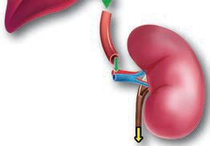<figcaption>Figure fig_ch03_p065_03 (Page 65)</figcaption></figure>
  <figure class="diagram-card" id="fig_ch03_p065_04"><figcaption>Figure fig_ch03_p065_04 (Page 65)</figcaption></figure>
  <figure class="diagram-card" id="fig_ch03_p065_05"><figcaption>Figure fig_ch03_p065_05 (Page 65)</figcaption></figure>
  <figure class="diagram-card" id="fig_ch03_p065_06"><figcaption>Figure fig_ch03_p065_06 (Page 65)</figcaption></figure>
  <figure class="diagram-card" id="fig_ch03_p065_07"><figcaption>Figure fig_ch03_p065_07 (Page 65)</figcaption></figure>
  <figure class="diagram-card" id="fig_ch03_p065_08"><figcaption>Figure fig_ch03_p065_08 (Page 65)</figcaption></figure>
  <figure class="diagram-card" id="fig_ch03_p065_09"><figcaption>Figure fig_ch03_p065_09 (Page 65)</figcaption></figure>
  <figure class="diagram-card" id="fig_ch03_p065_10"><figcaption>Figure fig_ch03_p065_10 (Page 65)</figcaption></figure>
  <figure class="diagram-card" id="fig_ch03_p065_11"><figcaption>Figure fig_ch03_p065_11 (Page 65)</figcaption></figure>
  <div class="page-content">
    <p>zœ“”šȻc IX</p>
    <p>øž¢Úš–›Æ †›ųc jÅzc iƈš„›ƀ›Úų‚§ mƂsšŽŒš§
mų§ Œ†Ǡ›šÚ›¢Ƽšg‚}ڌǫ¡ŒǮš¡Šš‘›s§Ƃ“Åņ
ā‘¡}‰Œš›¢sš”ā‘›Æ šŽš‘ci¢ˆšÆˆųā‘ciĬš
sų g“ fŦŽ–ŒǙ›‚›Ʃ§ ¢„š•sŽŒššÆ Œš›†DZ¡Œų
†››¢Ú§ ŒšųgŎcŒš›†DZā¡‘ ”ŽœŽĹ›Æ†›ų§
ˆŦǫųƂ⛍š§ “›–Åz†c (([FUHWLRQ)
†ƣ¡} ”ŽœŽĹ›¡ Ƃ š† “›–ÅzDZ“ǘÚÇ n¡‚š¡Úš
§#†›āÇڏ›š“ų“›ǡ§ ¡xƭž


¢sš””Ǵ–†‰Œš› iĬšsų sšÅŠÃ £qs§£–›
¡† ”ŽœŽĹ›Æ †›ų§ ƒš–Œc ˆŦǫų¡‚ā¡†¡ų§
†›āÇ Œ†Ǡ›šÚ› mųšÆ  ˆ zœ“ÆƂ“ÅņāÇڝc
sšÅŠÃ£qs§£–§ iˆ¢šu¡ƀ}ĹųĬ§¢ƂšĞœÄ
¡ŒǮš¡Šš‘›–Ĺ›¡ź
‰ŒšĬšsų
“›•“ǘ“š
e¢Œš›¡ “›•šc”c sĚ ž›šÚ› ŒšǮų Ƃ“Å
ņcg‚›ÆƂ š†¡ƀĞ‚š§mā¡†š§hƂ“Åņc
†}ڝų‚§#
x›ŅœsŽc  –žxsā‘¡}  e}›Ǚš†Ĺ›Æ “›”s†c
¡xƪ§ž›†›Åƣš¡Ĺڝ›ă§ s›ƀ§‚ƭššÚž</p>
    <p>£
sšÅŠÃ
›¡†
qs§£–
cˆŦ
ƒš–Œ ›Æ
ǫ››¡Ƽÿ
§¢„š•s
”ŽœŽĹ›†
‚ā¡†#
ŽŒšsų¡ ž
s¡ĬĹ</p>
    <p>ž›†›Åƣšc (Urea synthesis)
¢ƂšĞœÄ
¡ŒǮš¡Šš‘›–c
ŽÞc</p>
    <p>¢sš”c</p>
    <p>sŽÇ
e¢Œš›</p>
    <p>+CO2+H2O</p>
    <p>x›ŅœsŽc 3.9 ž›†›Åƣšc
•
•
•
•</p>
    <p>e¢Œš›Žžˆ¡ƀ}Æ
ž›†›Åƣšc†}ڝųe““c
ž›†›Åƣšc
ž›ˆŦǫÆ</p>
    <p>mÄ£–ŒsÇ</p>
    <p>ž›</p>
    <p>ŽÞc</p>
    <p>ŒžŅc</p>
    <p>ž› e}ڌǫ Œš›†DZā‘}ā› ŒžŅ¡Ĺ ˆc‚ǫ› ƽÚsÇ “›–Åz†Ĺ›Æ
ŒtDZˆÿ§“—›Úų†ƣ¡} ”ŽœŽĹ›¡“›–Åz†š““āÇn¡‚ƼšŒš§#
• ƽÚ  
z“c“ā‘cŒžŅśž¡} ˆŦǫų
• sŽÇ
ž›†›Åƣ›Úų
• ‚ǴÚ§ 

• ”Ǵš–¢sš”c 
65</p>
  </div>
</section><section class="page-section" id="page-66">
  <div class="page-header"><span class="page-number">Page 66</span></div>
  <figure class="diagram-card" id="fig_ch03_p066_01">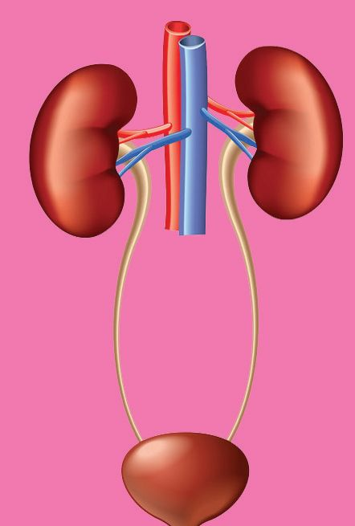<figcaption>Figure fig_ch03_p066_01 (Page 66)</figcaption></figure>
  <figure class="diagram-card" id="fig_ch03_p066_02"><figcaption>Figure fig_ch03_p066_02 (Page 66)</figcaption></figure>
  <figure class="diagram-card" id="fig_ch03_p066_03">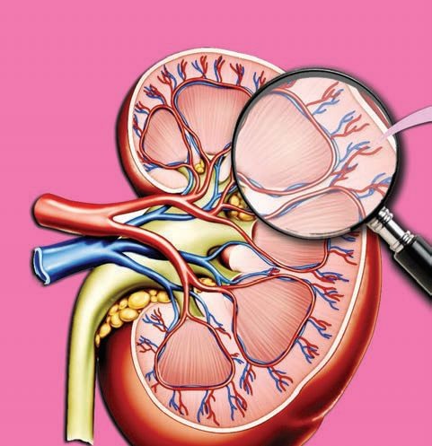<figcaption>Figure fig_ch03_p066_03 (Page 66)</figcaption></figure>
  <figure class="diagram-card" id="fig_ch03_p066_04">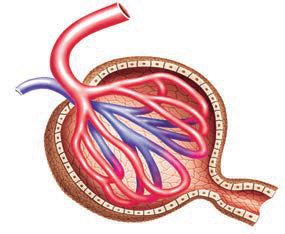<figcaption>Figure fig_ch03_p066_04 (Page 66)</figcaption></figure>
  <figure class="diagram-card" id="fig_ch03_p066_05">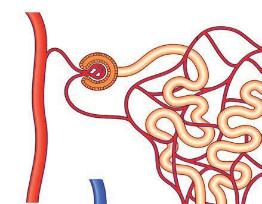<figcaption>Figure fig_ch03_p066_05 (Page 66)</figcaption></figure>
  <figure class="diagram-card" id="fig_ch03_p066_06">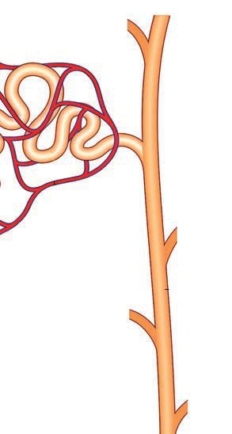<figcaption>Figure fig_ch03_p066_06 (Page 66)</figcaption></figure>
  <figure class="diagram-card" id="fig_ch03_p066_07">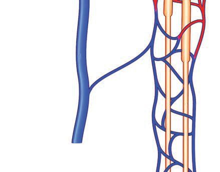<figcaption>Figure fig_ch03_p066_07 (Page 66)</figcaption></figure>
  <figure class="diagram-card" id="fig_ch03_p066_08"><figcaption>Figure fig_ch03_p066_08 (Page 66)</figcaption></figure>
  <figure class="diagram-card" id="fig_ch03_p066_09"><figcaption>Figure fig_ch03_p066_09 (Page 66)</figcaption></figure>
  <figure class="diagram-card" id="fig_ch03_p066_10"><figcaption>Figure fig_ch03_p066_10 (Page 66)</figcaption></figure>
  <figure class="diagram-card" id="fig_ch03_p066_11">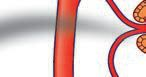<figcaption>Figure fig_ch03_p066_11 (Page 66)</figcaption></figure>
  <div class="page-content">
    <p>zœ“”šȻc IX</p>
    <p>ƽÚ
ƽښ Œ†›
ƽښ–›Ž
¡ˆÆ“›–§
ŒžŅ“š—›
ŒžŅš”c
ŒžŅ†š‘›
x›ŅœsŽc3.10 ƽڍce†ŠŰ‹šuā‘c</p>
    <p>¢ŠšŒšÄ–§sDZšƄDZžÇ</p>
    <p>e‰ź§¡“–Æ</p>
    <p>g‰ź§¡“–Æ
¢øšŒž–§
ƽښ Œ†›</p>
    <p>ƽښ†‘›s</p>
    <p>ƽښ–›Ž</p>
    <p>¢”tŽ†š‘›</p>
    <p>x›ŅœsŽc3.11 ¡†¢Ƌš›¡źv}†
66</p>
  </div>
</section>
    </main>
    <footer>
      <div class="nav-bar"><a href="part_1_chapter_02.html">← Chapter 2 (Pages 27-46)</a><a href="index.html">☰ Index</a><a href="part_1_chapter_04.html">Chapter 4 (Pages 67-80) →</a></div>
      <p style="text-align: center; font-size: 0.85rem; color: var(--text-muted); margin-top: 2rem;">
        Kerala SCERT Class 9 Biology (Malayalam Medium) - Extracted Study Text
      </p>
    </footer>
  </div>
</body>
</html>
